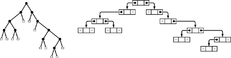

C++ Programming Robert Sedgewick - Princeton University Addison Wesley Professional Algorithms in C++, Parts 1–4: Fundamentals, Data Structure, Sorting, Searching, Third Edition
5.4. Trees
Trees are a mathematical abstraction that play a central role in the design and analysis of algorithms because
We have already seen examples of both of these uses. We designed algorithms for the connectivity problem that are based on tree structures in Chapter 1, and we described the call structure of recursive algorithms with tree structures in Sections 5.2 and 5.3.
We encounter trees frequently in everyday life—the basic concept is a familiar one. For example, many people keep track of ancestors or descendants with a family tree; as we shall see, much of our terminology is derived from this usage. Another example is found in the organization of sports tournaments; this usage was studied by Lewis Carroll, among others. A third example is found in the organizational chart of a large corporation; this usage is suggestive of the hierarchical decomposition that characterizes divide-and-conquer algorithms. A fourth example is a parse tree of an English sentence into its constituent parts; such trees are intimately related to the processing of computer languages, as discussed in Part 5. Figure 5.19 gives a typical example of a tree—one that describes the structure of this book. We touch on numerous other examples of applications of trees throughout the book.
This tree depicts the parts, chapters, and sections in this book. There is a node for each entity. Each node is connected to its constituent parts by links down to them, and is connected to the large part to which it belongs by a link up to that part.
In computer applications, one of the most familiar uses of tree structures is to organize file systems. We keep files in directories (which are also sometimes called folders) that are defined recursively as sequences of directories and files. This recursive definition again reflects a natural recursive decomposition, and is identical to the definition of a certain type of tree.
There are many different types of trees, and it is important to understand the distinction between the abstraction and the concrete representation with which we are working for a given application. Accordingly, we shall consider the different types of trees and their representations in detail. We begin our discussion by defining trees as abstract objects, and by introducing most of the basic associated terminology. We shall discuss informally the different types of trees that we need to consider in decreasing order of generality:
These diagrams show examples of a binary tree (top left), a ternary tree (top right), a rooted tree (bottom left), and a free tree (bottom right).
After developing a context with this informal discussion, we move to formal definitions and consider representations and applications. Figure 5.20 illustrates many of the basic concepts that we discuss and then define.
A tree is a nonempty collection of vertices and edges that satisfies certain requirements. A vertex is a simple object (also referred to as a node) that can have a name and can carry other associated information; an edge is a connection between two vertices. A path in a tree is a list of distinct vertices in which successive vertices are connected by edges in the tree. The defining property of a tree is that there is precisely one path connecting any two nodes. If there is more than one path between some pair of nodes, or if there is no path between some pair of nodes, then we have a graph; we do not have a tree. A disjoint set of trees is called a forest.
A rooted tree is one where we designate one node as the root of a tree. In computer science, we normally reserve the term tree to refer to rooted trees, and use the term free tree to refer to the more general structure described in the previous paragraph. In a rooted tree, any node is the root of a subtree consisting of it and the nodes below it.
There is exactly one path between the root and each of the other nodes in the tree. The definition implies no direction on the edges; we normally think of the edges as all pointing away from the root or all pointing towards the root, depending upon the application. We usually draw rooted trees with the root at the top (even though this convention seems unnatural at first), and we speak of node y as being below node x (and x as above y) if x is on the path from y to the root (that is, if y is below x as drawn on the page and is connected to x by a path that does not pass through the root). Each node (except the root) has exactly one node above it, which is called its parent; the nodes directly below a node are called its children. We sometimes carry the analogy to family trees further and refer to the grandparentor the sibling of a node.
Nodes with no children are called leaves, or terminal nodes. To correspond to the latter usage, nodes with at least one child are sometimes called nonterminal nodes. We have seen an example in this chapter of the utility of distinguishing these types of nodes. In trees that we use to present the call structure of recursive algorithms (see, for example, Figure 5.14) the nonterminal nodes (circles) represent function invocations with recursive calls and the terminal nodes (squares) represent function invocations with no recursive calls.
In certain applications, the way in which the children of each node are ordered is significant; in other applications, it is not. An ordered tree is a rooted tree in which the order of the children at every node is specified. Ordered trees are a natural representation: for example, we place the children in some order when we draw a tree. Indeed, many other natural concrete representations have a similar implied ordering; for example, this distinction is usually significant when we consider representing trees in a computer.
If each node must have a specific number of children appearing in a specific order, then we have an M-ary tree. In such a tree, it is often appropriate to define special external nodes that have no children. Then, external nodes can act as dummy nodes for reference by nodes that do not have the specified number of children. In particular, the simplest type of M-ary tree is the binary tree. A binary tree is an ordered tree consisting of two types of nodes: external nodes with no children and internal nodes with exactly two children. Since the two children of each internal node are ordered, we refer to the left childand the right child of internal nodes: every internal node must have both a left and a right child, although one or both of them might be an external node. A leaf in an M-ary tree is an internal node whose children are all external.
That is the basic terminology. Next, we shall consider formal definitions, representations, and applications of, in increasing order of generality,
By starting with the most specific abstract structure, we shall be able to consider concrete representations in detail, as will become clear.
Definition 5.1. A binary tree is either an external node or an internal node connected to a pair of binary trees, which are called the left subtree and the right subtree of that node|
This definition makes it plain that the binary tree itself is an abstract mathematical concept. When we are working with a computer representation, we are working with just one concrete realization of that abstraction. The situation is no different from representing real numbers with floats, integers with ints, and so forth. When we draw a tree with a node at the root connected by edges to the left subtree on the left and the right subtree on the right, we are choosing a convenient concrete representation. There are many different ways to represent binary trees (see, for example, Exercise 5.62) that are surprising at first, but, upon reflection, that are to be expected, given the abstract nature of the definition.
The concrete representation that we use most often when we implement programs that use and manipulate binary trees is a structure with two links (a left link and a right link) for internal nodes (see Figure 5.21). These structures are similar to linked lists, but they have two links per node, rather than one. Null links correspond to external nodes. Specifically, we add a link to our standard linked list representation from Section 3.3, as follows:
struct node { Item item; node *l, *r; };
typedef node *link;
The standard representation of a binary tree uses nodes with two links: a left link to the left subtree and a right link to the right subtree. Null links correspond to external nodes.

|
which is nothing more than C++ code for Definition 5.1. Nodes consist of items and pairs of pointers to nodes, and we also refer to pointers to nodes as links. Thus, for example, we implement the abstract operation move to the left subtree with a pointer reference such as x = x->l.
|
This standard representation allows for efficient implementation of operations that call for moving down the tree from the root, but not for operations that call for moving up the tree from a child to its parent. For algorithms that require such operations, we might add a third link to each node, pointing to the parent. This alternative is analogous to a doubly linked list. As with linked lists (see Figure 3.6), we keep tree nodes in an array and use indices instead of pointers as links in certain situations. We examine a specific instance of such an implementation in Section 12.7. We use other binary-tree representations for certain specific algorithms, most notably in Chapter 9.
Because of all the different possible representations, we might develop a binary-tree ADT that encapsulates the important operations that we want to perform, and that separates the use and implementation of these operations. We do not take this approach in this book because
We most often use the two-link representation. We use trees to implement higher-level ADTs, and wish to focus on those. We work with algorithms whose efficiency depends on a particular representation—a fact that might be lost in an ADT.
These are the same reasons that we use familiar concrete representations for arrays and linked lists. The binary-tree representation depicted in Figure 5.21 is a fundamental tool that we are now adding to this short list.
For linked lists, we began by considering elementary operations for inserting and removing nodes (see Figures 3.3 and 3.4). For the standard representation of binary trees, such operations are not necessarily elementary, because of the second link. If we want to remove a node from a binary tree, we have to reconcile the basic problem that we may have two children to handle after the node is gone, but only one parent. There are three natural operations that do not have this difficulty: insert a new node at the bottom (replace a null link with a link to a new node), remove a leaf (replace the link to it by a null link), and combine two trees by creating a new root with a left link pointing to one tree and the right link pointing to the other one. We use these operations extensively when manipulating binary trees.
Definition 5.2. An M-ary tree is either an external node or an internal node connected to an ordered sequence of M trees that are also M-ary trees|
We normally represent nodes in M-ary trees either as structures with M named links (as in binary trees) or as arrays of M links. For example, in Chapter 15, we consider 3-ary (or ternary) trees where we use structures with three named links (left, middle, and right) each of which have specific meaning for associated algorithms. Otherwise, the use of arrays to hold the links is appropriate because the value of M is fixed, although, as we shall see, we have to pay particular attention to excessive use of space when using such a representation.
|
Definition 5.3. A tree (also called an ordered tree) is a node (called the root) connected to a sequence of disjoint trees. Such a sequence is called a forest|
The distinction between ordered trees and M-ary trees is that nodes in ordered trees can have any number of children, whereas nodes in M-ary trees must have precisely M children. We sometimes use the term general tree in contexts where we want to distinguish ordered trees from M-ary trees.
Because each node in an ordered tree can have any number of links, it is natural to consider using a linked list, rather than an array, to hold the links to the node's children. Figure 5.22 is an example of such a representation. From this example, it is clear that each node then contains two links, one for the linked list connecting it to its siblings, the other for the linked list of its children.
Representing an ordered tree by keeping a linked list of the children of each node is equivalent to representing it as a binary tree. The diagram on the right at the top shows a linked-list-of-children representation of the tree on the left at the top, with the list implemented in the right links of nodes, and each node's left link pointing to the first node in the linked list of its children. The diagram on the right at the bottom shows a slightly rearranged version of the diagram above it, and clearly represents the binary tree at the left on the bottom. That is, we can consider the binary tree as representing the tree.
|
|
Property 5.4. There is a one-to-one correspondence between binary trees and ordered forests|
The correspondence is depicted in Figure 5.22. We can represent any forest as a binary tree by making the left link of each node point to its leftmost child, and the right link of each node point to its sibling on the right.
|
Definition 5.4. A rooted tree (or unordered tree) is a node (called the root) connected to a multiset of rooted trees. (Such a multiset is called an unordered forest.)|
The trees that we encountered in Chapter 1 for the connectivity problem are unordered trees. Such trees may be defined as ordered trees where the order in which the children of a node are considered is not significant. We could also choose to define unordered trees as comprising a set of parent–child relationships among nodes. This choice would seem to have little relation to the recursive structures that we are considering, but it is perhaps the concrete representation that is most true to the abstract notion.
We could choose to represent an unordered tree in a computer with an ordered tree, recognizing that many different ordered trees might represent the same unordered tree. Indeed, the converse problem of determining whether or not two different ordered trees represent the same unordered tree (the tree-isomorphism problem) is a difficult one to solve.
The most general type of tree is one where no root node is distinguished. For example, the spanning trees resulting from the connectivity algorithms in Chapter 1 have this property. To define properly unrooted, unordered trees, or free trees, we start with a definition for graphs.
|
Definition 5.5. A graph is a set of nodes together with a set of edges that connect pairs of distinct nodes (with at most one edge connecting any pair of nodes)|
We can envision starting at some node and following an edge to the constituent node for the edge, then following an edge from that node to another node, and so on. A sequence of edges leading from one node to another in this way with no node appearing twice is called a simple path. A graph is connected if there is a simple path connecting any pair of nodes. A path that is simple except that the first and final nodes are the same is called a cycle.
Every tree is a graph; which graphs are trees? We consider a graph to be a tree if it satisfies any of the following four conditions:
G has N – 1 edges and no cycles. G has N – 1 edges and is connected. Exactly one simple path connects each pair of vertices in G. G is connected, but does not remain connected if any edge is removed.
Any one of these conditions is necessary and sufficient to prove the other three. Formally, we should choose one of them to serve as a definition of a free tree; informally, we let them collectively serve as the definition.
We represent a free tree simply as a collection of edges. If we choose to represent a free tree as an unordered, ordered or even a binary tree, we need to recognize that, in general, there are many different ways to represent each free tree.
The tree abstraction arises frequently, and the distinctions discussed in this section are important, because knowing different tree abstractions is often an essential ingredient in finding an efficient algorithm and corresponding data structure for a given problem. We often work directly with concrete representations of trees without regard to a particular abstraction, but we also often profit from working with the proper tree abstraction, then considering various concrete representations. We shall see numerous examples of this process throughout the book.
Before moving back to algorithms and implementations, we consider a number of basic mathematical properties of trees; these properties will be of use to us in the design and analysis of tree algorithms.
|
Exercises |  5.56 Give representations of the free tree in Figure 5.20 as a rooted tree and as a binary tree. 5.56 Give representations of the free tree in Figure 5.20 as a rooted tree and as a binary tree.
| |  5.57 How many different ways are there to represent the free tree in Figure 5.20 as an ordered tree? 5.57 How many different ways are there to represent the free tree in Figure 5.20 as an ordered tree?
| | 5.58 Draw three ordered trees that are isomorphic to the ordered tree in Figure 5.20. That is, you should be able to transform the four trees to one another by exchanging children. | |  5.59 Assume that trees contain items for which operator== is defined. Write a recursive program that removes all the leaves in a binary tree with items equal to a given item (see Program 5.5). 5.59 Assume that trees contain items for which operator== is defined. Write a recursive program that removes all the leaves in a binary tree with items equal to a given item (see Program 5.5).
| | 5.60 Change the divide-and conquer function for finding the maximum item in an array (Program 5.6) to divide the array into k parts that differ by at most 1 in size, recursively find the maximum in each part, and return the maximum of the maxima. | | 5.61 Draw the 3-ary and 4-ary trees corresponding to using k = 3 and k = 4 in the recursive construction suggested in Exercise 5.60, for an array of 11 elements (see Figure 5.6). | | 5.62 Binary trees are equivalent to binary strings that have one more 0 bit than 1 bit, with the additional constraint that, at any position k, the number of 0 bits that appear strictly to the left of k is no larger than the number of 1 bits strictly to the left of k. A binary tree is either a 0 or two such strings concatenated together, preceded by a 1. Draw the binary tree that corresponds to the string
1 1 1 0 0 1 0 1 1 0 0 0 1 0 1 1 0 0 0.
| | 5.63 Ordered trees are equivalent to balanced strings of parentheses: An ordered tree either is null or is a sequence of ordered trees enclosed in parentheses. Draw the ordered tree that corresponds to the string
( ( ( ) ( ( ) ( ) ) ( ) ) ( ( ) ( ) ( ) ) ) .
| |  5.64 Write a program to determine whether or not two arrays of N integers between 0 and N – 1 represent isomorphic unordered trees, when interpreted (as in Chapter 1) as parent–child links in a tree with nodes numbered between 0 and N – 1. That is, your program should determine whether or not there is a way to renumber the nodes in one tree such that the array representation of the one tree is identical to the array representation of the other tree. 5.64 Write a program to determine whether or not two arrays of N integers between 0 and N – 1 represent isomorphic unordered trees, when interpreted (as in Chapter 1) as parent–child links in a tree with nodes numbered between 0 and N – 1. That is, your program should determine whether or not there is a way to renumber the nodes in one tree such that the array representation of the one tree is identical to the array representation of the other tree.
| | 5.65 Write a program to determine whether or not two binary trees represent isomorphic unordered trees. | | 5.66 Draw all the ordered trees that could represent the tree defined by the set of edges 0-1, 1-2, 1-3, 1-4, 4-5. | | 5.67 Prove that, if a connected graph of N nodes has the property that removing any edge disconnects the graph, then the graph has N – 1 edges and no cycles. |
|